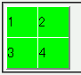
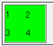

2003-07-19修正。補足に追加。
CSSでボーダーのプロパティを指定せずにtable要素のborderプロパティだけで枠を設定しているテーブルに対して border-collapse: collapse; を指定すると、テーブル全体を囲む枠は表示されるがセルを囲む枠は表示されない。
<table border="2" style="border-collapse:collapse; background:lime;"> <tr><td>1</td><td>2</td></tr> <tr><td>3</td><td>4</td></tr> </table>
| 1 | 2 |
| 3 | 4 |
テーブルの枠はtable要素のborderプロパティで表示させています。
WinIE6.0での表示（標準モード）
Opera7.11での表示（標準モード）
CSSを用いて、テーブルセル要素に対してボーダーを設定することでこのバグを回避できます。
<style type="text/css">
table.sample {
border-collapse: collapse;
border: 2px outset gray;
}
table.sample th, table.sample td {
border: 1px inset gray;
}
</style>
<table border="2" class="sample">
<tr><td>1</td><td>2</td></tr>
<tr><td>3</td><td>4</td></tr>
</table>
| 1 | 2 |
| 3 | 4 |
または、table要素開始タグで rules="all" を明示することでも回避できます。
<table border="2" style="border-collapse:collapse;" rules="all"> <tr><td>1</td><td>2</td></tr> <tr><td>3</td><td>4</td></tr> </table>
| 1 | 2 |
| 3 | 4 |
CSS2では、HTMLの特定の要素や属性など、CSS以外の手段による体裁指定は「相当するCSS規則に変換し、制作者CSSの先頭に追加する」と定められているので、table要素のborder属性（およびframe属性、rules属性）を無視するOperaの実装はバグと考えられます。